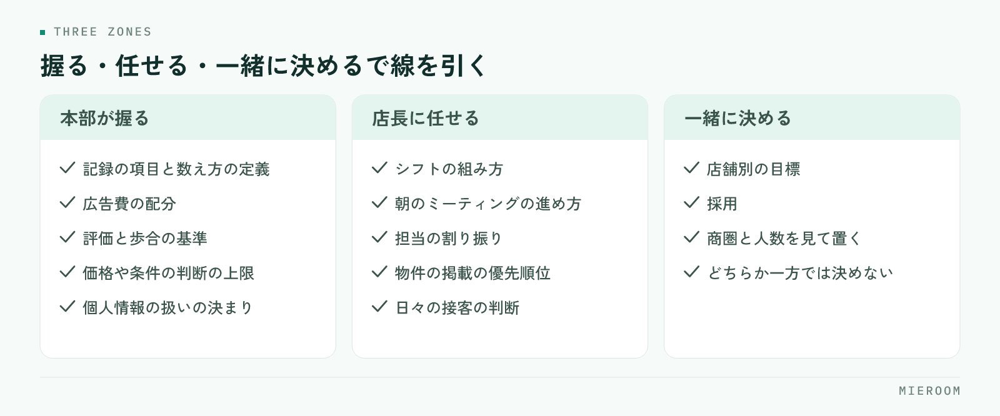

店舗が2つになった時点で、管理の仕事は倍にはならず、別の種類の仕事に変わります。結論から申し上げると、複数店舗の管理でつまずくのは人の問題より先に、店舗ごとに数え方が違うという記録の問題です。同じ「反響」「申込」という言葉が店舗ごとに別のものを指していると、数字を並べても良し悪しを判断できません。この記事では、記録の形をそろえ、店舗別に見る項目を決め、任せる範囲を線引きするまでの手順を整理します。
この記事の結論
複数店舗の管理は、店舗を比べる前に数え方の定義をそろえるところから始めてください。見るのは売上の結果ではなく、反響・来店・申込という手前の段です。そのうえで本部が握る範囲と店長に任せる範囲を文字で決めると、口出しと放任のどちらにも寄らずに運営できます。
複数店舗の管理でつまずくのは、店舗ごとに数え方が違うこと
店舗が増えたあとに最初に起きるのは、数字が合わないという現象です。本部に上がってくる月次の報告を並べても、A店とB店で言葉の意味が違っているため、比較になりません。
たとえば反響という言葉です。A店は問い合わせが入った件数を数え、B店は連絡がついた件数だけを数えている。この2つを並べると、B店のほうが反響が少なく見えます。実際には数え方が違うだけで、集客の差とは関係がありません。
申込も同じです。申込書を受け取った時点で1件とする店舗と、審査に出した時点で1件とする店舗があります。売上も、確定したものと見込みを混ぜて報告する店舗があると、月末の合計が動き続けます。
言葉の定義をそろえる作業は、システムを入れるより先に必要です。まず、反響・来店・申込・契約・売上の5つについて、いつの時点で1件と数えるのかを文字にしてください。この1枚があるだけで、店舗間の報告が比べられる形になります。
店舗をまたいで同じ形で持つ5つの記録
定義をそろえたら、次は記録の置き方です。店舗ごとに表の形が違うと、本部でまとめる作業が毎月発生します。
同じ形で持ちたいのは5つです。一つ目は反響の記録で、入った日時・経路・お客様の希望条件・担当者・その後の状況。二つ目は接客の記録で、来店日・案内した物件・次の約束。三つ目は申込の記録で、申込日・物件・入居予定日・審査の状況。四つ目は入金の記録で、入金予定日・実際の入金日・金額の内訳。五つ目は担当者ごとの成績です。
ここで決めるのは項目の名前と並び順です。項目がそろっていれば、店舗が増えても同じ形で足せます。逆に、店舗ごとに独自の列が増えていくと、合算のたびに手作業が入ります。
先に記録の形を渡してから、営業を始めてください。開店してから整えようとすると、既に動いている業務を止めることになります。既存店で使っている項目の一覧をそのまま渡すのが、最も早い引き継ぎになります。
店舗別に比べるのは、売上の結果ではなく手前の段
店舗を比べるとき、売上だけを並べても打ち手は出てきません。商圏の規模も人数も違うため、金額の差が何を意味するのか分からないからです。見るのは、売上に至る手前の段です。
| 見る項目 | 何が分かるか | 差が出たときに確かめること |
|---|---|---|
| 反響の件数 | 掲載と集客の量 | 掲載物件数と媒体の違い |
| 連絡がついた件数 | 初動の速さ | 反響から一次返信までの時間 |
| 来店の件数 | 誘導の力 | 電話とメールでの案内の仕方 |
| 申込の件数 | 接客の精度 | ヒアリング項目と提案の数 |
| 確定売上 | 最終の結果 | 申込後のキャンセルの有無 |
| 担当者ごとの件数 | 店内の偏り | 特定の担当者に寄っていないか |
| 入金の遅れ | 事務の精度 | 入金予定日の管理の有無 |
この並びで見ると、差が出ている段がどこかが分かります。反響は同じなのに来店が少ない店舗なら、集客ではなく初動か案内の仕方に原因があります。来店は多いのに申込が少ないなら、接客の中身を見ます。どの段で落ちているかが分かれば、店舗に投げる問いが具体的になります。
店舗別の売上の見方は店舗の損益と粗利の見方にも整理しています。
店舗ごとの差は、商圏・人・物件に分けて読む
数字に差が出たとき、すぐ人の話にしないことが大切です。差の原因は3つに分かれます。
一つ目は商圏です。駅の乗降客数、学校や企業の立地、単身とファミリーの比率、競合店の数。これは店舗が努力して変えられる部分ではありません。商圏が違う店舗の数字を同じ基準で評価すると、店長が納得しない評価になります。
二つ目は人です。人数、経験年数、担当の割り振り、入退社の時期。繁忙期に新人が多い店舗は、同じ反響数でも申込まで残る数が落ちます。これは育成の問題として扱う話で、集客の問題ではありません。
三つ目は物件です。預かっている物件の数と質、業者間サイトから引ける物件の幅、オーナーとの関係。扱える物件が少ない店舗は、来店しても提案が出せません。
差を見つけたら、この3つのどれで説明できるかを先に考えてください。どれでも説明できない差が残ったとき、初めて進め方の違いを見ます。そこに店舗間で広げるべき工夫が隠れています。
店長に任せる範囲と、本部が握る範囲を決める
複数店舗の運営で最も相談が多いのは、どこまで任せるかという線引きです。全部見ようとすると本部が持たず、全部任せると数字が見えなくなります。

本部が握るのは、判断の基準と、店舗をまたいで影響するものです。記録の項目と数え方の定義、広告費の配分、評価と歩合の基準、価格や条件の判断の上限、個人情報の扱いの決まり。これらが店舗ごとに違うと、後から統一できなくなります。
店長に任せるのは、店舗の中で完結する運営です。シフトの組み方、朝のミーティングの進め方、担当の割り振り、物件の掲載の優先順位、日々の接客の判断。ここに本部が細かく入ると、店長が判断しなくなります。
一緒に決めるのは、目標と採用です。目標は本部が一方的に置くと達成されず、店舗が決めると低くなります。商圏と人数を見ながら両者で置くのが現実的です。
この線引きは、口頭ではなく1枚の紙にしてください。任せる範囲が文字になっていない状態が、口出しと放任の両方を生みます。2店舗目を出す前の判断は2店舗目を出す判断にまとめています。
複数店舗の管理のチェックリストと、よくある失敗
毎月、本部で次の項目を確かめてください。店舗から上げてもらう形にせず、同じ画面や同じ表で見られる状態にしておくと、確認の時間が短くなります。
- 反響・来店・申込・契約・売上の定義が、全店舗で同じになっているか
- 記録の項目と並び順が、全店舗で同じ形になっているか
- 店舗別に、反響から申込までの各段の件数が出ているか
- 確定売上と見込みが分かれて見えているか
- 入金予定日を過ぎた案件が、店舗別に分かるか
- 担当者ごとの件数が、店舗の中で偏っていないか
- 広告費の配分を、店舗別の成績を見てから決めているか
- 任せる範囲と本部が握る範囲の1枚が、最新の内容になっているか
- 店舗間で共有すべき工夫が、月に1つ以上拾えているか
よくある失敗は、次の5つです。
売上だけを並べて比べる。商圏と人数が違うため、金額の差では打ち手が決まりません。手前の段まで分けて見てください。
報告の様式を店舗に任せる。様式が違うと、本部でまとめる作業が毎月発生します。項目は本部が決めて渡してください。
数え方の定義を決めずにシステムを入れる。定義が曖昧なまま入力を始めると、きれいな画面に意味の違う数字が並びます。順番は定義が先です。
成績の良い店舗の進め方を広げない。差を評価するだけで終わると、店舗が増えるほど差が開きます。月に1つ、他店に渡す工夫を決めてください。
店長の判断する範囲を書面にしない。線引きが曖昧だと、本部が細かく入り、店長が判断を止めます。1枚の紙にして共有してください。
自分たちで進める場合と、ツールに任せる場合の分かれ目
一般論として、判断の基準は3つあります。
一つ目は、本部で数字をまとめる作業に毎月どれだけ時間がかかっているかです。店舗から届いた表を開いて、形をそろえて、合算して、見比べる。この作業が月末の数日を占めているなら、入力の時点で同じ形になる仕組みに寄せたほうが早くなります。店舗数が少なく、表のまとめがすぐ終わるなら、手元の表で続ける判断もあり得ます。
二つ目は、見たいときに見られるかどうかです。報告を待たないと数字が分からない状態では、月末にしか手を打てません。反響が落ちている、入金が遅れている、特定の担当者に偏っている。こうした変化に気づく速さを上げたいなら、記録が一か所に集まる形が必要になります。
三つ目は、店舗がこれから増えるかどうかです。増える前提なら、記録の形と数え方を先に固めておくほうが、後から統一するより手間が小さくなります。今の店舗数で固定する前提なら、運用の決まりを紙で整えるだけでも足ります。
迷うときは、本部の誰かが月末に数字をまとめている時間を測ってみてください。その時間が営業や育成に回せるものなら、仕組みに寄せる判断に根拠が出ます。
よくある質問
店舗ごとに業務の進め方が違います。無理にそろえるべきですか？
店舗別の目標は、どうやって置けばよいですか？
店長が数字を見てくれません。どうすればよいですか？
店舗をまたいでお客様を紹介し合うとき、売上はどう扱いますか？
本部に専任の担当者がいません。誰が見るべきですか？
まとめ：数え方がそろえば、店舗は比べられる
賃貸仲介で複数店舗を管理する順番は決まっています。反響・来店・申込・契約・売上の数え方の定義をそろえる。記録の項目と並び順を本部が決めて渡す。店舗別に、売上ではなく手前の段の件数を並べる。差が出たら商圏・人・物件のどれで説明できるかを先に考える。任せる範囲と握る範囲を1枚の紙にする。毎月同じ項目を確かめ、他店に渡す工夫を1つ拾う。この形にすると、店舗が増えても管理の仕事が比例して増えません。
逆に、様式を店舗任せにしたまま売上だけを並べていると、店舗が増えるほど本部のまとめ作業が膨らみ、打ち手は出てきません。複数店舗の運営を分けているのは店長の能力より先に、比べられる形になっているかどうかです。
ミエルームなら、反響管理・接客管理・申込管理表・売上管理が同じ案件でつながっているため、店舗ごとの入力がはじめから同じ形で残ります。反響分析で経路別と担当者別の成績がそのまま見られ、申込・入金管理では確定売上と見込みが分かれて表示されるので、月末に各店舗の表を集めて形をそろえる作業がなくなります。すでにExcelで管理している記録はインポートと初期設定の代行に対応しており、最短即日からの開始もできます。機能の詳細は機能・事例をご覧ください。資料のご請求やデモアカウントの発行は、この下のボタンからお気軽にどうぞ。